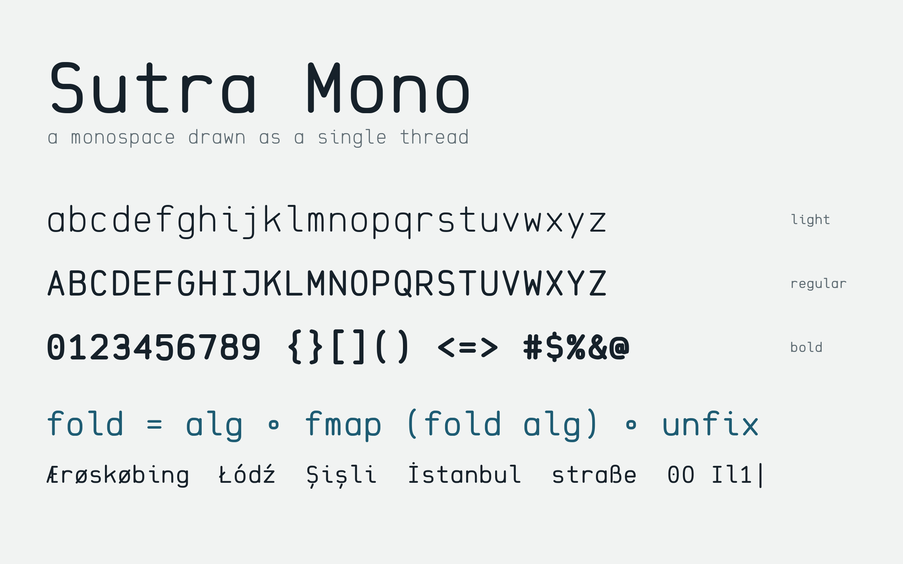
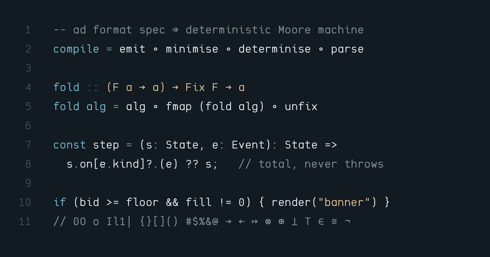

Sutra Mono started from a one-sentence brief: a coding font that is smooth, with a flow between the characters, nothing unessential, rounded and complete. Rather than adapting a sans-serif to a fixed grid, every glyph is stored as a skeleton, the path a pen would take if it never lifted, and outlined by sweeping a single pen along it.

The pen is slightly elliptical, so horizontal strokes come out a few percent lighter than vertical ones, a correction type designers have long made by eye. Round letters use a superellipse with an exponent of 2.7 and overshoot the baseline and x-height. Seven lowercase letters share one bowl, and the arch of n is reused by h, m and u, so the alphabet agrees with itself.

The name comes from the Sanskrit sūtra, a thread, and by extension a short rule that holds a whole system in a line. Code is that kind of writing, and the font tries to stay out of its way.